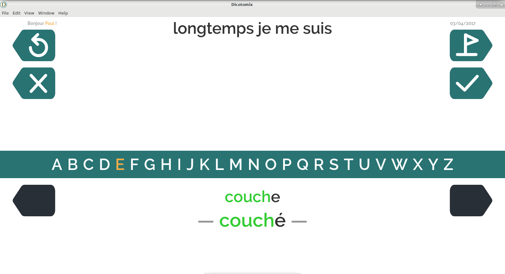

Dicotomix est un logiciel qui s'adresse aux personnes en situation de handicap moteur empêchant la communication par la parole ou l'écriture.
Dicotomix permet, à l'aide d'un signal oui/non en entrée, de trouver de manière efficace un mot dans un lexique.
Pour en savoir plus sur l'approche utilisée et ce qu'elle apporte en plus des méthodes traditionnelles, vous pouvez consulter:

Dicotomix est réalisé dans le cadre du projet intégré du M1 d'informatique de l'ENS de Lyon.
Participent à sa réalisation :
En développement actif, Dicotomix est pour le moment instable.
Distribuées sous licence MIT, vous pouvez trouver ses sources ici: